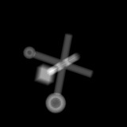

(Surface view)

| .OPERATION: | PJ 3 | ; Project volume |
| .INPUT VOLUME: | sav_vol_ax_pd | ; Volume (input) |
| .PROJECTION DIMENSIONS: | 160, 160 | ; Size of output projection |
| .OUTPUT FILE: | pj3 | ; Image (output) |
| .PHI, THETA & PSI: | 45, 30, 30 | ; Projection direction |
| Input volume (Surface view) | Output Projection Image |
|---|---|
|  |